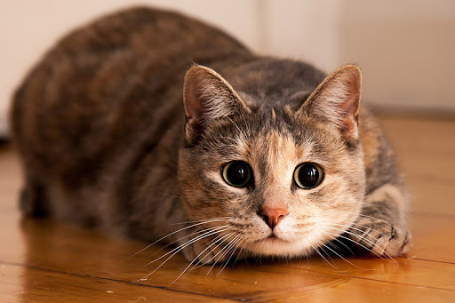

Россия — одна из немногих стран, где чаще заводят кошек, чем собак. Мурлыкающие питомцы есть в каждом втором доме, а всего их в стране почти в два раза больше, чем псов: 33,7 миллиона против 18,9 миллиона. Судя по результатам недавних исследований, перекос в сторону кошек вполне обоснован. Они не менее преданны, а для общения с человеком даже выработали специальный язык.
